LLMOps — Serve a Llama-3 Model with BentoML
Quickly set up LLM APIs with BentoML and Runpod.
January 22, 2025 · LLMOps, BentoML, Llama-3
Introduction
I often see data scientists getting interested in the development of LLMs in terms of model architecture, training techniques or data collection. However, I have noticed that many times, outside the theoretical aspect, in many people have problems in serving these models in a way that they can actually be used by users.
In this brief tutorial, I thought I would show in a very simple way how you can serve an LLM, specifically llama-3, using BentoML.
BentoML is an end-to-end solution for machine learning model serving. It facilitates Data Science teams to develop production-ready model serving endpoints, with DevOps best practices and performance optimization at every stage.
We need GPU
As you know in Deep Learning having the right hardware available is critical. Especially for very large models like LLMs, this becomes even more important. Unfortunately, I don’t have any GPU 😔
That’s why I rely on external providers, so I rent one of their machines and work there. I chose for this article to work on Runpod because I know their services and I think it is an affordable price to follow this tutorial. But if you have GPUs available or want to use any other provider, feel free to skip this part.
First, make sure you have a Runpod account. Next we need to create a cryptographic key pair with which we can authenticate to Runpod via SSH connection.
I have a MacOS, so I used the following tutorial to generate the keys. But for Linux and Windows, the procedure should not be much different.
Manually generating your SSH key in macOSYou generate an SSH key through macOS by using the Terminal application. Once you upload a valid public SSH key, the…docs.tritondatacenter.comdocs.tritondatacenter.comYou should now have a public and a private key. Be sure not to share your private key anywhere! In the settings, Runpod will ask you to enter the public key so that you can authenticate, so go ahead and copy it into the appropriate slot as shown.
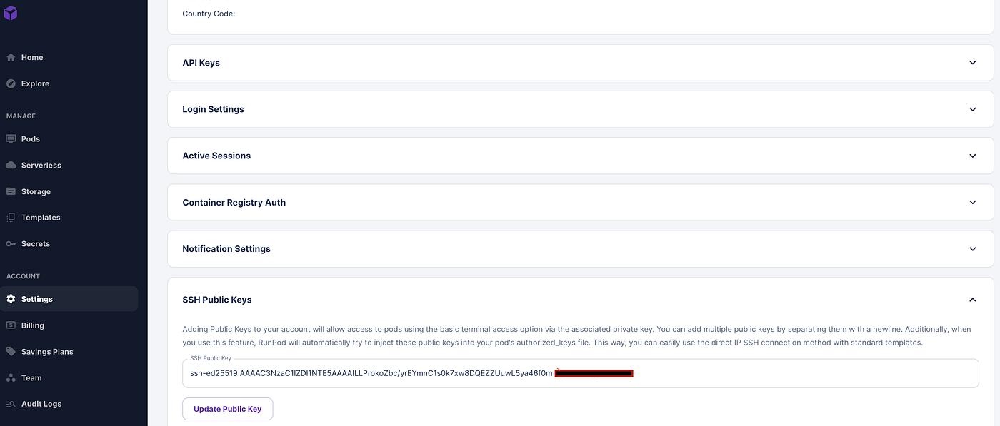
Now we are ready to create a pod, that is, a virtual machine that we can use to code. Click on the “+Deploy” button.
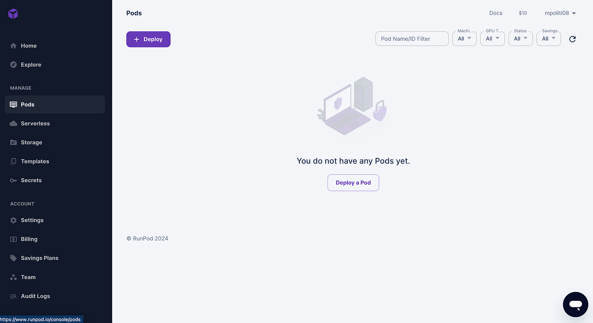
Runpod will ask you to specify which type of GPU you want to use. The price changes depending on the performance of the GPU you need. Ours is just a tutorial so we do not have extreme needs in terms of latency or throughput. In this case, I chose an RTX 4090.
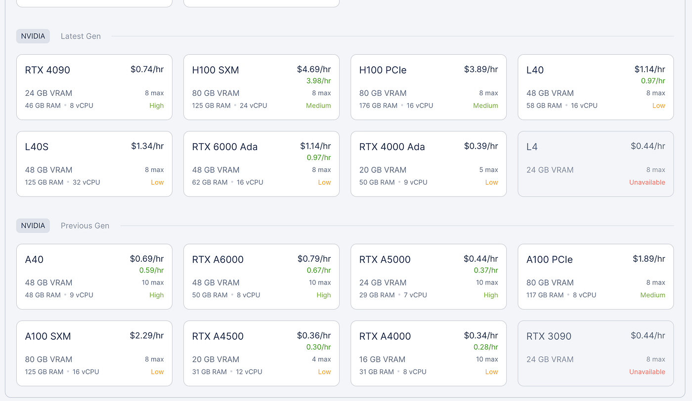
You can further modify the model and increase the disk size to 40GB.
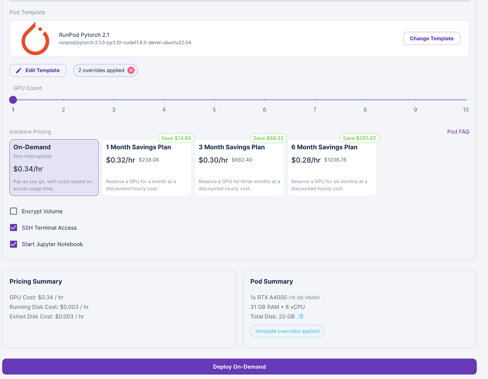
If you click on the “connect” button, Runpod will show you the commands you can use from bash to connect to the machine made available for you remotely.
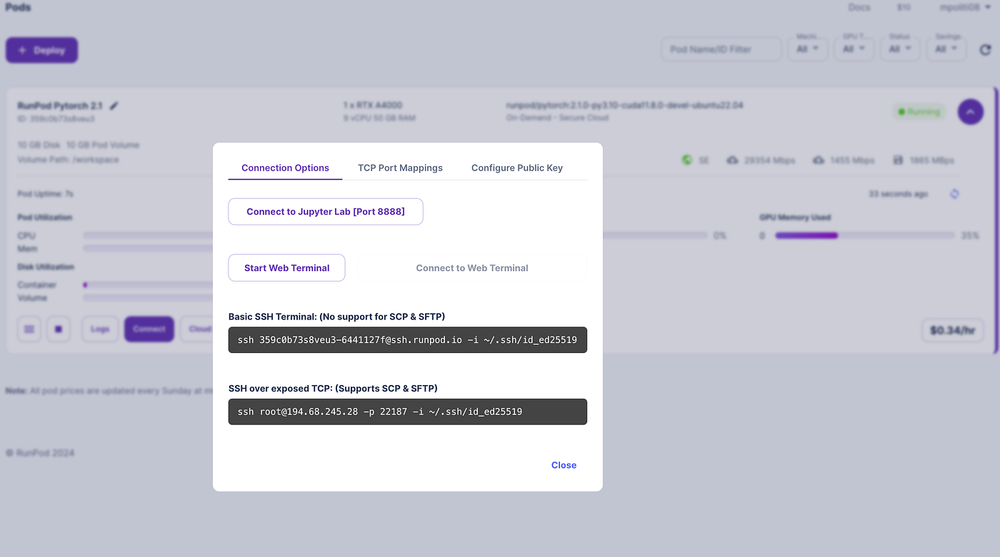
Before we start working, however, there is one more thing we need to do. The command shown above specifies an IP address and a port.
Now you need to go into the terminal and access the .ssh folder where you keep your SSH keys.
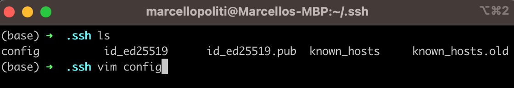
Edit the “config” file using the “vim config” command.
Add an entry to your file as in my case. I named the host “bentoml”, and added the IP, the port and also the path where my private key is located, this way when trying to connect to this host, the pc will automatically know where to find the key to connect.
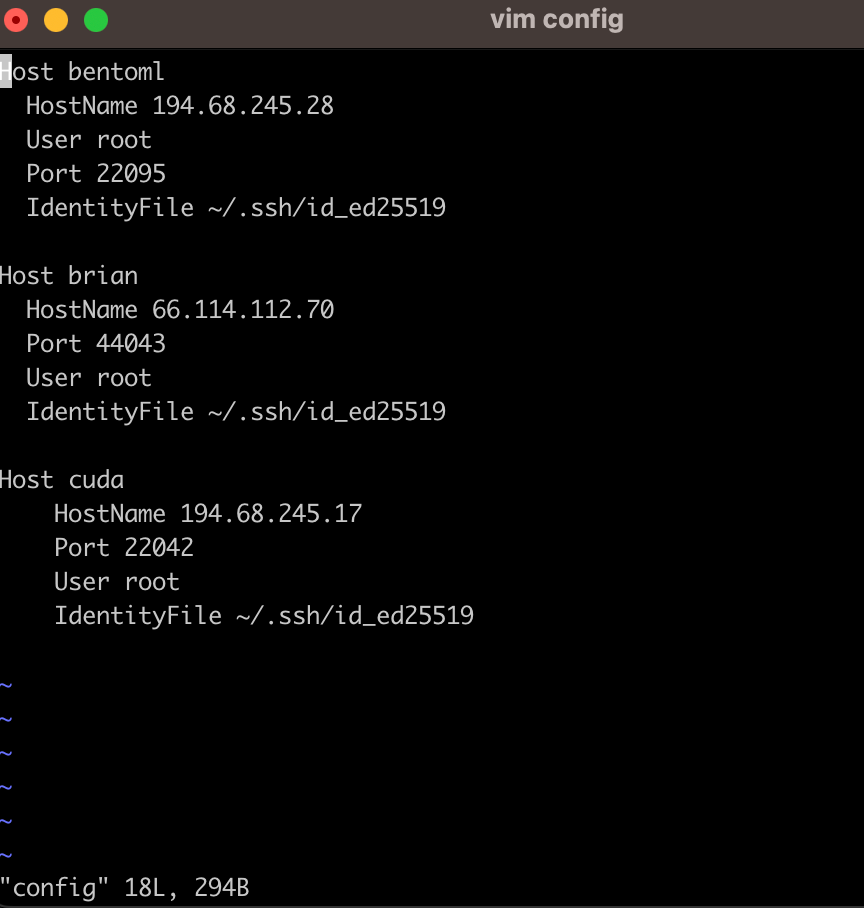
It would be nice though to connect from VSCode instead of using the CLI right? Just follow a few simple steps. Open VSCode and click on the blue arrows at the bottom left as shown in the image. In the drop-down menu now click on “connect to host”.
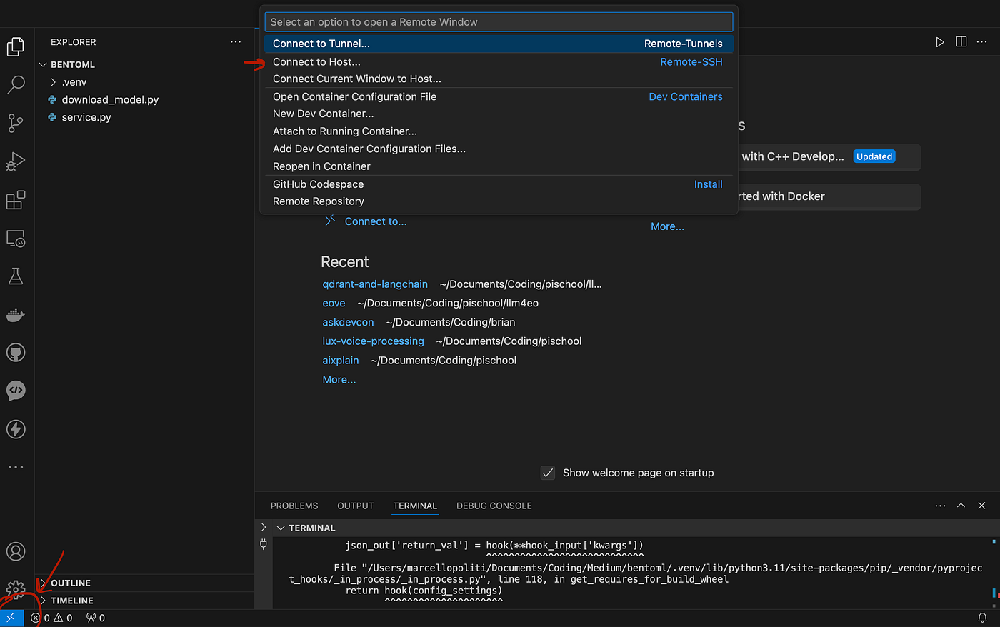
Now VSCode will know which hosts are available because we entered them first in the configuration file, in fact, it will recognize bentoml as the host. Click on it.
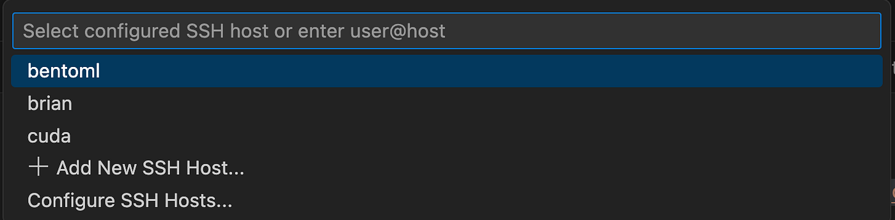
You are now inside the Runpod virtual machine! Open the /workspace folder and you can start working.
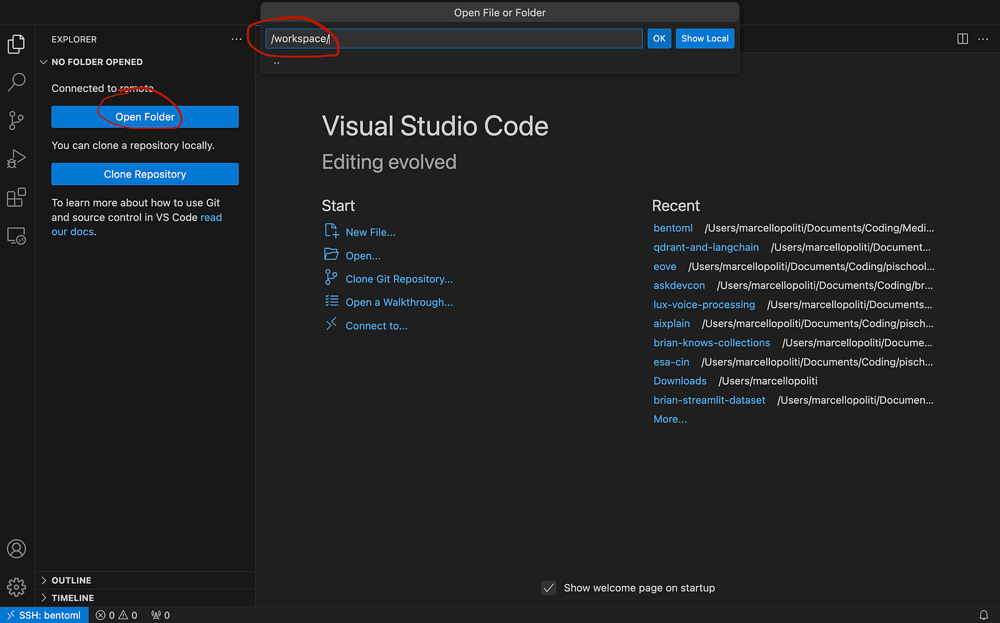
Serve with BentoML
Setting up the development environment with Runpod was probably the most complex part of this tutorial because BentoML makes serving llama-3 really easy.
First of all, with the CLI we can clone the repository developed by the BentoML team.
git clone https://github.com/bentoml/BentoVLLM.gitIn the repository, we will find several examples of different models.
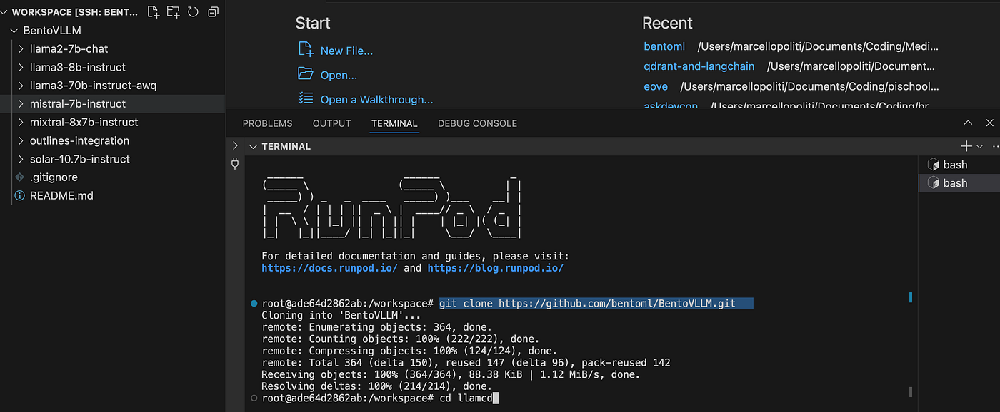
In this case, we will specifically use llama3–8b-instruct. So we go into that folder.
cd BentoVLLM/
cd llama3-8b-instruct/We need to install all the necessary requirements.
pip install -r requirements.txt && pip install -f -U "pydantic>=2.0"The actual code is found in the service.py file.
However, it will suffice for us to invoke the following command to serve the model.
bentoml serve .When the model is served an IP address will open to you to see the API locally. If you add the path “/docs” to the IP address, you will find the swagger with all the methods available.
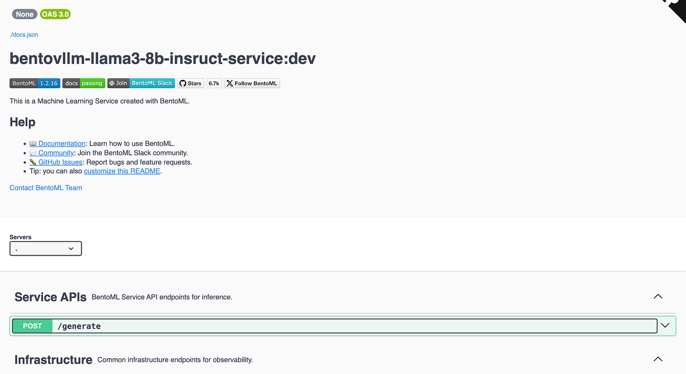
You see that the main API is /generate in which you can enter a prompt and a system prompt and wait for the output of the model.
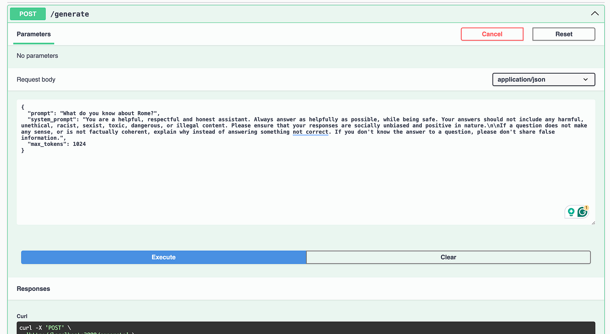
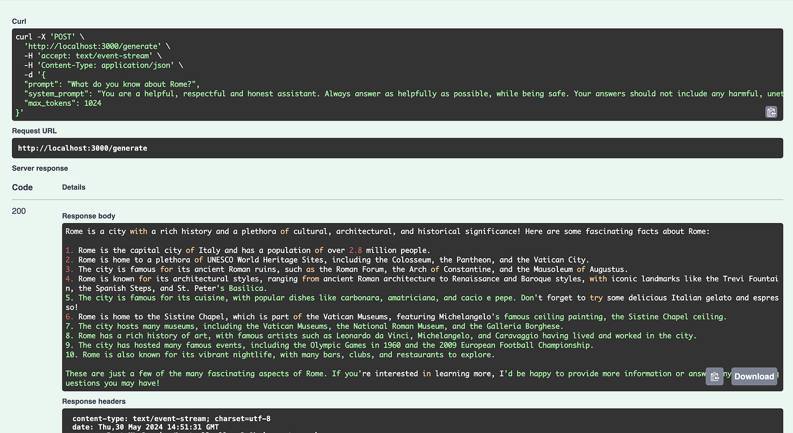
Of course, in addition to the swagger, you can use the API from code for example if you want to develop your own custom frontend!
Conclusion
In this article, we saw how to connect to a remote machine using an SSH connection. In this tutorial we used Runpod but all providers follow a similar procedure.
Connecting via SSH directly from VSCode is very useful, so that we can write code and visualize files from our favourite IDE, and we saw in this article how to do this in simple steps by registering the host data on the configuration file.
Ironically the serving of llama-3 was the fastest part of this simple tutorial, as thanks to bento we only need to call a command to have the model running and usable via the swagger.
Follow me on Medium for more in-depth tutorials on BentoML 😁
💼 Linkedin ️| 🐦 X (Twitter) | 💻 Website
This article has been published on Towards Data Science